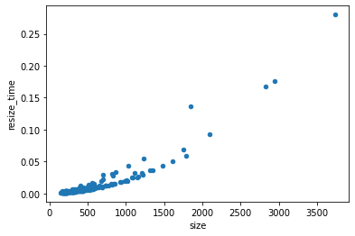

Building an AI Driven Game at no cost
I built Emotion Escape an adventure game with the twist that you navigate using facial expressions. Specifically you upload a photo of a face that is one of happy, sad, angry, fearful or disgusted. The emotion expressed is detected using a machine learned image recognition model, and the story changes depending on your emotion.
I built the game in a few hours at no cost, and all the resources are publicly available. I trained the emotion recognition model with fastai using a Kaggle Notebook on an existing dataset of emotion expressions. Following Tanishq Abraham’s blog I exported the model to a pickle, built a basic Gradio app and uploaded it to a huggingface space. The Gradio app hosted in a huggingface space exposes a REST API, and so I built a basic web app that implements the rooms of the adventure game and calls the API to determine the emotion. I then hosted the web app in Github Pages so it’s publicly accessible.
Training the model
The model training approach follows the example in Chapter 2 of the fastai book. We get some data, in this case using an existing dataset, because it was hard to get good results from web search. The core of the model loading and training is just a few lines:
dls = ImageDataLoaders.from_df(df_label_subset,
item_tfms=Resize(400),
batch_tfms=aug_transforms(size=224),
fn_col='resized_image',
label_col='label',
valid_col='valid')
learn = vision_learner(dls, resnet34, metrics=[error_rate])
learn.fine_tune(5)When I first started training the model I found that Kaggle was indicating almost all the time was used by CPU and not by GPU, and I found training time didn’t change when I changed the architecture size (e.g. to restnet18 or resnet50). The reason for this was that for large images it could take a long time just to open and resize them. Since we’re training for multiple epochs, that is running through each image multiple times, resizing the images before training made the whole process faster.

I tried different architectures and found that accuracy increased significantly for larger models, and I settled on a resnet101. However this made inference too slow in the ML API and so I switched back to a resnet32.
When I first tried to add batch_tfms=aug_transforms(size=224) I got an error about MAGMA library not found in compilation. This has to do with the GPU accelerated augmentation transforms fastai does. I found a Kaggle product feedback that solved the issue:
pip install --user torch==1.9.0 torchvision==0.10.0 torchaudio==0.9.0 torchtext==0.10.0I also removed some classes of training data. In the original data there were 7 classes: neutral, happy, sad, surprise, fear, disgust, anger, contempt. However looking through the training data I often could not distinguish surprise from fear and anger from contempt. The labels were already quite noisy and so the model did very badly on them. Neutral was also very hard for the model, and didn’t fit with the game concept, so I removed it too.
Building the ML API
Now we have a trained ML model how do we serve it?
The trained model was exported with learn.export() and I downloaded the pickle file. I created a simple Gradio app the full listing of which is below:
import gradio as gr
from fastai.vision.all import *
learn = load_learner('export.pkl')
labels = learn.dls.vocab
def predict(img):
img = PILImage.create(img)
pred,pred_idx,probs = learn.predict(img)
return {labels[i]: float(probs[i]) for i in range(len(labels))}
gr.Interface(
fn=predict,
inputs=gr.inputs.Image(shape=(224, 224)),
outputs=gr.outputs.Label(),
title="Emotion Classifier",
description="An emotion classifier trained on AffectNet with fastai. Identifies emotions of anger, disgust, fear, happy, and sad.",
examples=["happy.jpg", "sad.jpg", "angry.jpg", "fear.jpg", "disgust.jpg"],
enable_queue=True,
).launch()The example images I picked from an image search. Then I created a huggingface space, committed the files in git (with the model export.pkl using Git LFS), and pushed it to the space. This gives not only the demo page but also a REST API.
Prototyping the web application
I first built a simple demo app on a separate dog versus cat classifier. It has all the core functionality of uploading an image, sending it to the server hosting the ML model, and extracting the label from the response. You can see the entire source code.
For the HTML I started with a web search for an HTML5 template and then added a basic interface to upload an image and show the image and prediction.
<body>
<h1>Dog vs Cat Classifier</h1>
<label for="image-file">Upload a picture of a dog or a cat:</label>
<input type="file"
id="image-file" name="image-file"
accept="image/*">
<div>
<img id="image-preview" src="img/DogProfile.svg" width="400 px">
<script src="js/script.js"></script>
<p id="prediction-text">Class...</p>
</body>The input element with type file allows uploading an image. There is an optional capture attribute which can specify which camera to use on mobile devices, but it’s behaviour is different by device; it’s best to not specify it so people can choose whether to upload a photo or use the camera. I couldn’t find a HTML way to capture an image from camera on desktop and mobile; that seems to require javascript.
There are a few elements with ids that we are going to access from javascript. There is image-file which contains the uploaded image, image-preview where we can show that image, and prediction-text where we can show the result.
I don’t know javascript well and the code was half-written by me and half by Github Copilot and StackOverflow. For a Python programmer the amount of asynchronous programming in javascript is a learning curve; when an image is uploaded or a HTTP request is sent it happens in the background, and if you try to immediately access the variable will appear to be empty unless you do something to wait for the result. One way of doing that is with async and await, but Copilot steered me towards a then syntax.
Gradio requires the image to be base64 encoded which we can do with FileReader.readDataAsURL. The Promise and onload parts are dealing with the asynchronous tasks and potential failure; I’d love to understanding them in more detail.
function dataUrlFromFile(file) {
return new Promise((resolve, reject) => {
const reader = new FileReader();
reader.onload = (event) => {
resolve(event.target.result);
};
reader.readAsDataURL(file);
});
}Then this data URL can be sent to the Gradio server as per the API docs.
function classifyImage(dataUrl) {
const jsonData = {"data": [dataUrl]}
const jsonDataString = JSON.stringify(jsonData);
const headers = new Headers();
headers.append('Content-Type', 'application/json');
const request = new Request(classificationEndpoint, {
method: 'POST',
headers: headers,
body: jsonDataString
});
return fetch(request).then(response => response.json());
}Finally when we have a prediction we want extract the result from it:
function formatAsPercentage(number, digits) {
return (number * 100).toFixed(digits) + "%";
}
function formatPredictionText(prediction) {
const predictionData = prediction.data[0];
const confidence = predictionData.confidences[0]['confidence']
return `${predictionData.label}: ${formatAsPercentage(confidence, 2)} confidence`;
}Whenever a file is uploaded we want to update the preview image, get the predictions and update the prediction text. We can do this using an onChange listener to call a function whenever the file is uploaded, and then update individual HTML elements by their id using document.getElementById. The code is a little gnarly because we have to wait for the file to load, and then wait for the prediction to return.
const selectElement = document.getElementById('image-file');
selectElement.addEventListener('change', (event) => {
const files = event.target.files;
if (files.length > 0) {
const file = files[0];
// Set image-preview to file data
dataUrlFromFile(file).then((dataUrl) => {
document.getElementById('image-preview').src = dataUrl;
// Update the prediction text with the classification result
classifyImage(dataUrl).then((prediction) => {
console.log(prediction);
document.getElementById('prediction-text').innerText = formatPredictionText(prediction);
});
});
}
});That’s all there is to it. One issue I found in testing is it’s very slow on photos taken on mobile because we are sending a huge file to the server. Ideally we would add some javascript to resize the images (in a way appropriate for the model) before sending them to make it faster.
Building the web application
Once I had the bare bones working I could design and build the game. Adventure games like this consist of “rooms” and “directions”; each room has a description that is shown and depending on the direction you end up in another room. Here the directions are the emotion that is detected; happy, angry, sad, fear or disgust. The room map is a graph with one initial node, and terminal nodes consisting of win and failure. I planned the story and room map on pen and paper.
Then it was very straightforward to build the game in Javascript. The rooms with descriptions and directions were represented by an object. A method was added to update the room and change the UI. This method was called onChange of the file upload widget.
It could still be made better with more polish. I added an image to each room to help illustrate the story. Some CSS to make the game look better would add a lot. Making it easier to take photos from a camera would make the game experience much better. And of course the writing and story could be improved. But it’s great having a working proof of concept with only a few hours work that can be iterated on.